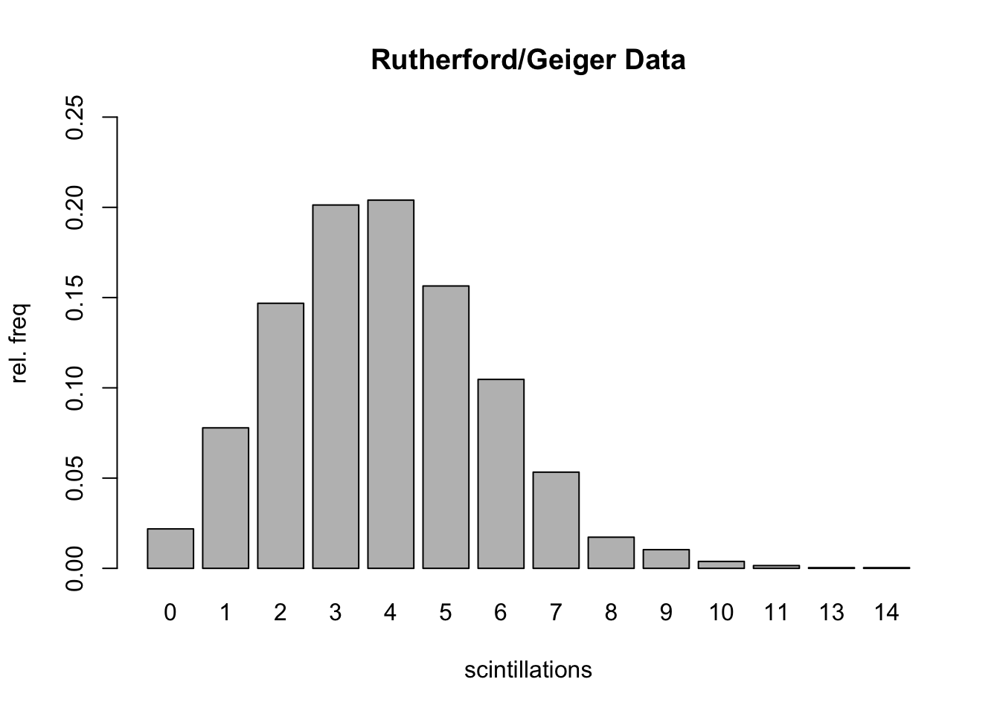
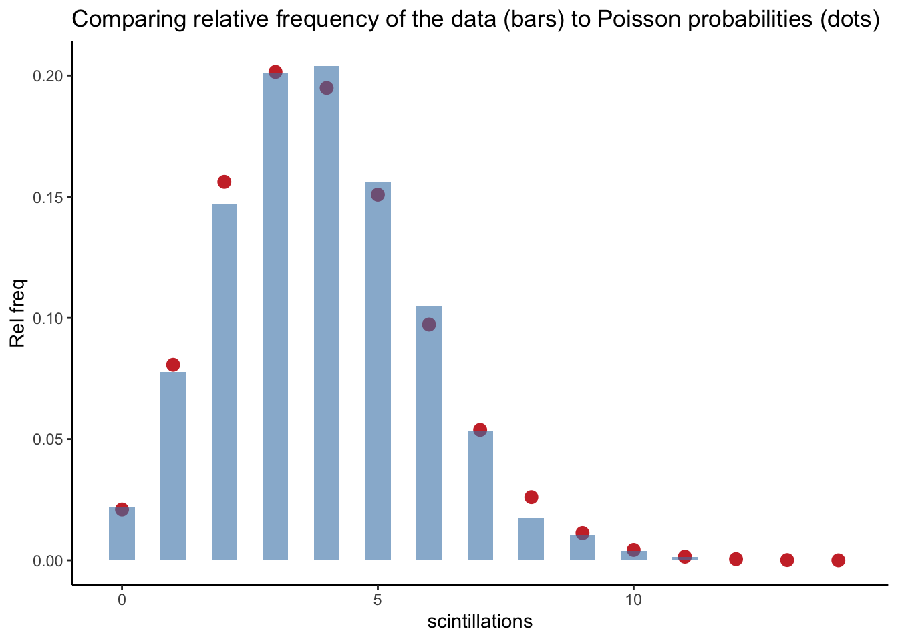
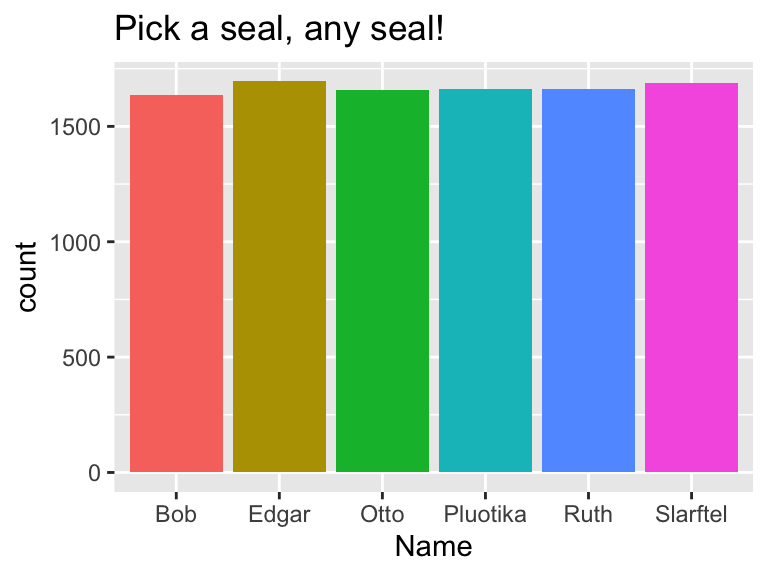

C Discrete Random Variables in R
Here we investigate in R the common, named discrete random variables we encounter in MATH 340:
- binomial |
binom - geometric |
geom - negative binomial |
nbinom - hypergeometric |
hyper - Poisson |
pois
We use four commands to work with the named distributions. For a distribution named ___:
d___(x,...)| probability function, \(p(x)\)p___(q,...)| Cumulative probability, \(P(X \leq q)\)q___(p,...)| Quantiles, finds \(x\) such that \(P(X \leq x) = p\)r___(n,...)| Random sample of size \(n\) from the distribution
We also discuss below how to build and analyze homemade discrete random variables in R.
C.1 Binomial binom
The Scene
Recall, \(X \sim \texttt{binom}(n,p)\) means \(X\) counts the number of successes in \(n\) independent, identical Bernoulli trials, when probability of success on any given trial is \(p\).
The space of \(X\) is \(x = 0, 1, \ldots, n\).
Probability function
For \(x = 0, 1, \ldots, n,\) \[p(x)=\binom{n}{x}p^x(1-p)^{n-x}.\]
The binomial distribution in R
dbinom() - probability function
dbinom(x,n,p)returns the probability \(P(X = x)\) for \(X \sim \texttt{binom}(n,p)\).
For instance, dbinom(2,5,.3) returns \[\binom{5}{2}(.3)^2(.7)^3.\]
## [1] 0.3087As a check:
## [1] 0.3087pbinom() - cumulative probability
pbinom(q,n,p)returns the cumulative probability \(P(X \leq q)\) for \(X \sim \text{binom}(n,p)\): \[\sum_{x=0}^q p(x)=\sum_{x=0}^q\binom{n}{x}p^x(1-p)^{n-x}.\]
So pbinom(2,5,.3) returns \(P(X \leq 2)\) when \(X\) is \(\texttt{binom}(5,.3)\):
## [1] 0.83692As a check:
## [1] 0.83692qbinom() - quantiles
Recall the definition of quantile (9.4): If \(0 < p < 1,\) the \(p\)th quantile of \(X,\) denoted \(\phi_p,\) is the smallest value such that \(P(X \leq \phi_p) \geq p\). In other words, the value \(\phi_p\) marks the smallest value below which one finds 100*p percent of the distribution of \(X\).
qbinom(q,n,p)returns the quantile \(\phi_q\) for \(X \sim \texttt{binom}(n,p)\)
For instance, what value marks the 95th percentile of the \(\texttt{binom}(100,.5)\) distribution?
## [1] 58So, if you flip a fair coin 100 times and count how many heads you get, about 95% of the time you would flip less than or equal to 58 heads.
We can check this:
## [1] 0.955687rbinom() - sampling
rbinom(10,20,.4)will generate a vector that stores a random sample of size 10 drawn from a \(\texttt{binom}(20,.4)\) distribution.
## [1] 7 7 5 11 10 9 6 6 7 8We can use r___ to run simulations, and to visualize the shape of a distribution.
Two useful commands for summarizing data: table() presents the frequency table for the sample, and barplot(table()) is a quick way to visualize this frequency table.
## sim_data
## 2 3 4 5 6 7 8 9 10 11 12 13 14 15
## 3 8 36 77 106 160 161 181 130 82 36 12 7 1C.2 Geometric geom
The Scene
Let the random variable \(X\) denote the number of identical, independent Bernoulli trials (with probability of success \(p,\) probability of failure \(q = 1-p\)) up to and including the first success.
Then \(X\) is called a geometric random variable with parameter \(p\).
Notation
\(X\) is \((p)\).
The space of \(X\) is \(x = 1, 2, \ldots\)
Probability function
For \(x = 1, 2, 3, \ldots,\) \[p(x)= q^{x-1}p.\]
NOTE: The geometric distribution in R counts failures, not total trials.
In R geom counts the number of failures until the first success, not the total number of trials up to and including the first success.
As with the binom distribution, we can use the d___, p___, q___, and r___ commands to determine probability for particular values of \(x,\) cumulative probabilities, quantiles, and random samples, respectively.
dgeom(4,.3)gives the probability of seeing 4 failures before the first success in a Bernoulli trial in which \(p = .3\)
## [1] 0.07203
pgeom(4,.3)gives the probability of seeing 4 or fewer failures before the first success in a sequence of Bernoulli trials in which \(p = .3\)
## [1] 0.83193and the following line gives the probability of seeing more than 4 failures prior to the first success:
## [1] 0.16807Example C.1
Roll a fair 6-sided die until a four comes up, and let \(X\) denote the rolls up needed to see that first four. Repeat this game 10,000 times, and plot the frequency distribution for \(X\).
Strategy:
- Note that this game is a Bernoulli trial, where “success” means rolling a 4 and “failure” means not rolling a four. So \(p = 1/6,\) and \(q = 5/6\).
- Take a random sample of size 10000 from the
geomdistribution in R with thergeom()method (which records the number of failures, not the number of trials). - Add one to each value in the sample to get the number of trials.
- barplot the table!
OMG notice from the bar plot that one depressing game required 44 rolls to see my first 4.
C.3 Negative Binomial nbinom
The Scene
Again, we consider a sequence of Bernoulli trials (probability of success is \(p,\) probability of failure is \(q = 1-p\)).
We let \(X\) denote the number of trials in the sequence up to and including the \(r\)th success, where \(r \geq 1\) is a positive integer. Then \(X\) is called a negative binomial random variable with parameters \(p\) and \(r\).
Notation: \(X\) is \(\texttt{nbinom}(r,p)\)
The space of \(X\) is \(x = r, r+1, r+2, \ldots\)
Probability function
For \(x = r, r+1, r+2, \ldots ,\) \[p(x)= \binom{x-1}{r-1}p^{r}q^{x-r}.\]
Example C.2 A study indicates that an exploratory oil well drilled in a particular region should strike oil with probability 0.2. Find the probability that the third oil strike comes on the 10th well drilled.
Here, if \(X\) equals the number of wells drilled until the company gets its third strike, then \(X\) is Nb(3,.2), and the answer to this question is \(P(X=10)\) which is \[P(X=10)=\binom{9}{2}0.2^{3}.8^{7}.\]
## [1] 0.0604In R this distribution is accessed using nbinom, but this distribution, like geom, focuses on the number of failures, not total trials. If we want to know the probability that our third success occurs on the 10th trial, this is equivalent to the probability of having 10-3 = 7 failures before getting our third success, which can be computed in R as
## [1] 0.06039798Visualizing \(X \sim \texttt{nbinom}(3,.2)\)
C.4 Hypergeometric hyper
The Scene
A finite population has \(N\) elements, each of which possesses one of two possible characteristics. Say we have a jar of \(N\) marbles, each is either red or black. Let’s say \(m\) of them are red and \(n\) of them are black (so \(m + n = N\)). We draw a sample of size \(k,\) and let \(X\) denote the number of red marbles in the jar.
Then \(X\) is called a hypergeometric random variable with parameters \(m,\) \(n,\) and \(k\).
Notation: \(X\) is \(\texttt{hyper}(m,n,k)\)
The space of \(X\) is \(x = 0,1,2,\ldots,k\) subject to the restriction that \(x \leq m\) and \(k - x \leq n\).
Probability function
The probability function is \[p(x)= \frac{\binom{m}{x}\binom{n}{k-x}}{\binom{m+n}{k}}.\]
In R Use hyper.
Example C.3
A group of 6 seals and 4 pelicans hang at the beach, and they select a random subset of size 5 to play beach volleyball. Let \(X\) = the number of pelicans chosen.
Here, \(X\) is hypergeometric with parameters \(m = 4\) (4 pelicans), \(n = 6\) (6 seals) and \(k = 5\) (sample size).
The probability that \(X = 2\) is
## [1] 0.4761905We can also use the built in command dhyper(x,m,n,k)
## [1] 0.4761905Example C.4 (Good Potatoes Bad Potatoes in R)
A truck has 500 potatoes, 50 of which are bad, the rest are good. We sample 10. What is the probability that more than 3 are bad?
If \(X\) equals the number of bad potatoes in the sample, then \(X\) is hypergeometric with parameters \(m = 50,\) \(n=450,\) and \(k = 10\).
So \[P(X > 3) = 1 - P(X \leq 3)\]
which can be calculated with the cumulative probability command phyper:
## [1] 0.01186118C.5 Poisson pois
The Scene
The Poisson probability distribution can provide a good model for the number of occurrences \(X\) of a rare event in time, space, or some other unit of measure. A Poisson random variable \(X\) has one parameter, \(\lambda,\) which is the average number of occurrences of the rare event in the indicated time (or space, etc.)
Notation: \(X\) is \(\texttt{Poisson}(\lambda)\).
The space of \(X\) is \(x = 0,1,2,\ldots,\) (countably infinite!)
Probability function
The probability function is \[p(x)=\frac{\lambda^x}{x!}e^{-\lambda}\]
In R use pois.
Example C.5
Suppose \(X\) is Poisson(5). Determine \(P(X \geq 10)\).
Note: \(P(X \geq 10) = 1-P(X < 10)= 1-P(X \leq 9)\). So, using ppois() we have
## [1] 0.03182806Example C.6
The number \(X\) of typos on a page in a textbook follows a Poisson distribution with an average number of 2 typos per page. (a) If you pick a page at random, what is the probability it contains 0 typos? (b) According to this model, 99% of the pages have no more than how many typos?
## [1] 0.1353353## [1] 6Example C.7 (Rutherford/Geiger Data)
In a paper published in 1910 entitled “The Probability Variations in the Distribution of \(\alpha\)-particles”, Rutherford and Geiger reported data that counted the number of “scintillations” in 72 second intervals caused by radioactive decay of a quantity of the element polonium.
Here are the data:
results=rep(0:14,c(57,203,383,525,532,408,273,139,45,27,10,4,0,1,1))
trials=length(results)
table(results)## results
## 0 1 2 3 4 5 6 7 8 9 10 11 13 14
## 57 203 383 525 532 408 273 139 45 27 10 4 1 1barplot(table(results)/trials,
ylim=c(0,.25),
ylab="rel. freq",
xlab="scintillations",
main="Rutherford/Geiger Data")
Here’s the mean of the data (which gives average # of scintillations in 72 seconds):
## [1] 3.871549Let’s compare the observed relative frequencies to the theoretical probabilities associated with a \(\texttt{Poisson}(3.87)\) distribution:
| x | rel_freq | pois_prob |
|---|---|---|
| 0 | 0.0219 | 0.0209 |
| 1 | 0.0778 | 0.0807 |
| 2 | 0.1469 | 0.1562 |
| 3 | 0.2013 | 0.2015 |
| 4 | 0.2040 | 0.1949 |
| 5 | 0.1564 | 0.1509 |
| 6 | 0.1047 | 0.0973 |
| 7 | 0.0533 | 0.0538 |
| 8 | 0.0173 | 0.0260 |
| 9 | 0.0104 | 0.0112 |
| 10 | 0.0038 | 0.0043 |
| 11 | 0.0015 | 0.0015 |
| 12 | 0.0000 | 0.0005 |
| 13 | 0.0004 | 0.0001 |
| 14 | 0.0004 | 0.0000 |
ggplot(df)+
geom_point(aes(x,pois_prob),col="brown3",size=3)+
geom_col(aes(x,rel_freq),fill="steelblue",alpha=.6, width=.5)+
ylab("Rel freq")+
xlab("scintillations")+
ggtitle("Comparing relative frequency of the data (bars) to Poisson probabilities (dots)")+
theme_classic()
C.6 Homemade Discrete Random Variables
Let’s say a discrete random variable \(X\) has finite sample space and known probability function \(p(x)\). We often display this type of probability model via a table:
\[ \begin{array}{c|c|c|c|c|c} x & 5 & 6 & 7 & 8 & 9 \\ \hline p(x) & 0.1 & 0.1 & 0.3 & 0.4 & 0.1 \end{array} \] We can input this model into an R session by defining two vectors:
We can check in R that the two conditions for a valid probability have been met by this assignment:
- Each probability is non-negative:
Px >= 0= TRUE, TRUE, TRUE, TRUE, TRUE - The probabilities add to 1:
sum(Px)= 1
Expected Value of \(X\)
Recall if \(X\) is a discrete random variable with probability function \(p(x),\) then the expected value of \(X\) is \[E(X)=\sum_{\text{all }x}x\cdot p(x)\]
Having defined vectors \(X\) and \(Px\) in R, we calculate \(E(X)\) by running
## [1] 7.3Note: For those who have taken vector calculus sum(v*w) returns the dot product of v and w, aka the inner product. R has an alternative command for this dot product, which is v %*% w. So, sum(v*w) and v %*% w do the same thing, but I prefer the first option to remind me that the expected value is obtained as a sum over all \(x\) of some things.
Variance of \(X\)
Recall the variance of \(X\) is \[V(X) = E[(X-\mu)^2],\] where \(\mu = E(X)\). Alternatively, the variance can be computed via \[V(X) = E(X^2)-\mu^2.\]
So we can compute the variance of \(X\) in R as follows:
## [1] 1.21Or, alternatively, as follows:
## [1] 1.21Distribution Plots
R can offer some quick visualizations of probability distributions.
The following code will give the shape of the probability distribution (with a splash of color and plot title:)
Sampling
The following code draws a sample of size 10 from our distribution using the weighted probabilities assigned by the probability function:
## [1] 8 7 7 8 9 7 5 8 6 6If we take a large sample, and make a relative frequency table of the results, it should be close to the probability table:
##
## 5 6 7 8 9
## 0.390 0.372 1.155 1.544 0.374C.6.1 Discrete Uniform Distribution
Definition C.1 If \(X\) is a finite set with size \(|X| = n\). The probability distribution defined by \[p(x) = \frac{1}{n}\] for all \(x \in X\) is called uniform.
In a uniform distribution, we will find over a large number of trials that each name comes up with about the same frequency.
Example C.8
Pick a random seal from the famous Eddington family: Otto, Ruth, Pluotika, Slarftel, Edgar and Bob.
To simulate the process of picking one seal at random from the family, a large number of times, we sample 1 element with replacement, a large number of times.
family=c("Bob", "Edgar", "Pluotika", "Otto", "Ruth", "Slarftel")
results=sample(family,10000,replace=TRUE)The resulting frequency plot should look uniform:
ggplot(data.frame(results))+
geom_bar(aes(x=results,fill=results))+xlab("Name")+ggtitle("Pick a seal, any seal!")+theme(legend.position = "none")
Way to go Edgar, you over achiever!